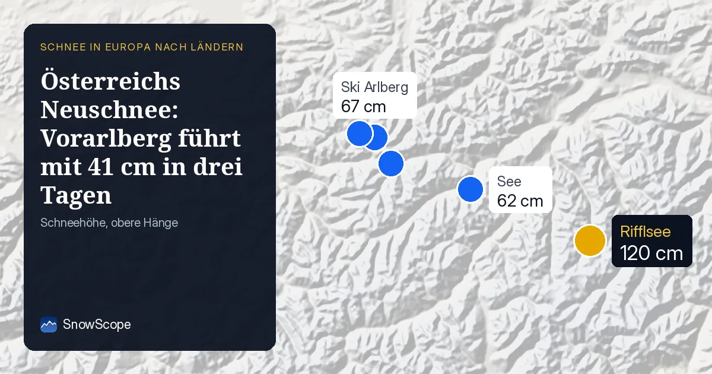
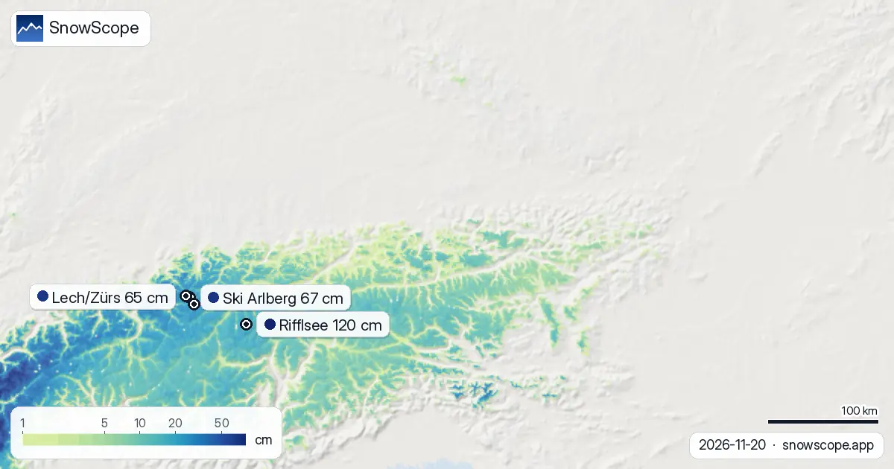

Österreichs Neuschnee: Vorarlberg führt mit 41 cm in drei Tagen
Ein dreitägiger Sturm hat Österreich seinen heftigsten Schneefall seit Saisonbeginn gebracht, Vorarlberg erhielt 41 cm. Der Großteil dieses nassen Schnees fiel in den westlichen Gebirgsketten, wo er sich ablagert und schmilzt, um Quellen und Bäche zu speisen.
Die Live-Schneeprognose für Rifflsee in der SnowScope-AppSchneehöhen, Pulverschnee-Alarme und 3D-Karte, gratis.
Wo der Schnee fiel
Vorarlberg bekam die volle Kraft des Sturms ab und sammelte in den drei Tagen bis 20. November 41 cm Neuschnee. Kärnten im Süden erhielt 31 cm, und die Ötztaler Alpen dazwischen 28 cm. Diese nassen Ablagerungen bilden den Kern der winterlichen Wasserversorgung in jedem Tal.
In Österreich insgesamt erlebten 19.620 Quadratkilometer in diesen drei Tagen mindestens 5 cm Neuschnee. Das ist zwei Drittel der Skitourengelände des Landes. Die Schneegrenze lag am 20. November bei 1.400 m, daher bleiben tiefere Täler noch überwiegend schneefrei.
| Skigebiet | Schneehöhe | Neuschnee, 72 h | Erwartet, nächste Tage | Gipfel |
|---|---|---|---|---|
| Rifflsee | 120 cm | 17 cm | 21 cm | 2.804 m |
| Ski Arlberg | 67 cm | 31 cm | 37 cm | 2.642 m |
| Lech/Zürs | 65 cm | 31 cm | 39 cm | 2.436 m |
| St. Anton/St. Christoph/Stuben | 65 cm | 25 cm | 36 cm | 2.642 m |
| See | 62 cm | 21 cm | 28 cm | 2.567 m |

Neuschnee gemessen
Die heftigsten Niederschläge an einem einzelnen Tag stehen noch bevor. Die nächsten drei Tage (bis 23. November) könnten in manchen Gebieten bis zu 38 cm bringen, die nächsten sieben Tage bis zu 44 cm.
Diese schnelle Zunahme ist jetzt an Bergstationen messbar und in den Tiefenzunahmen an Skigebieten von Lech/Zürs (31 cm in drei Tagen gemessen) bis Ski Arlberg (ebenfalls 31 cm) sichtbar.

Wo der tiefste Schnee liegt
Der Rifflsee auf 2.804 m hält das tiefste Schneepaket: 120 cm am 20. November. Diese gletschergespeiste Station erhielt in drei Tagen 17 cm und wird in den nächsten drei Tagen weitere 21 cm erhalten. Die Hochlagen (über 2.500 m) haben jetzt durchschnittlich 27 cm und sind vollständig bedeckt.
Über 2.000 m ist der Schnee flächig mit 100 % Bedeckung vorhanden und hat durchschnittlich 16 cm Tiefe. Zwischen 1.500 und 2.000 m sind 97 % der Hänge weiß mit einer mittleren Tiefe von 7 cm. Unter 1.500 m ist der Schnee fleckig: nur 32 % Bedeckung zwischen 1.000 und 1.500 m und gerade 3 % unter 1.000 m.
Der Weg des Sturms und sein Timing
Das Muster ist eine klassische Nord-Süd-Progression. Vorarlberg, der feuchter Atlantikluft ausgesetzt und dem Anflugweg am nächsten, traf es am stärksten. Der Sturm schwächte ab, während er die Gebirgsketten überquerte, daher erhielten Kärnten und die zentralen Täler weniger. Diese ungleichmäßige Verteilung ist in der alpinen Hydrologie normal: die Luvseiten füllen sich schnell, die Leseiten langsamer.
Seit Saisonbeginn am 21. November hat Österreich insgesamt 44 % weiße Bedeckung aufgebaut. Das ist dünn für Ende November, aber der neue Sturm hat die schneebedeckte Fläche von 20 Quadratkilometern vor einer Woche auf 22.850 heute angehoben. Der Schmelztrend des vergangenen Tages (2.320 Quadratkilometer verloren) spiegelt wärmere Luft in tieferen Lagen wider, nicht den Verlust von Wasser, das über 1.500 m gespeichert ist.
Was kommt als nächstes
Die zweite Woche des Winters (28. November bis 4. Dezember) sieht trockener aus. Es werden nur maximal 14 cm prognostiziert, verglichen mit den möglichen 36 cm in der ersten Woche. Das bedeutet, der Höhepunkt dieses Sturms, der gerade im Gange ist, ist das Hauptereignis für November. Skigebiete sollten ihre besten Bedingungen zwischen 23. und 25. November sehen.
Die Schweiz liegt mit 64 % weißer Bedeckung und Tiefen von 124 cm am Glacier 3000 vorne. Deutschland bleibt mit 4 % Bedeckung weit zurück. Österreich sitzt dazwischen, baut seinen Schneevorrat noch auf, profitiert aber vom Sturmspur.
Wasserspeicher-Perspektive
Aus hydrologischer Sicht ist dieser Sturm bedeutsam. Der Neuschnee in der Höhe ist trocken und wird über die kommenden Wochen verdichtet und verfestigt, bildet eine dichte Schicht, die über Winter und Frühling hinweg stetiges Schmelzwasser zu Flüssen und Speichern beiträgt. Die mittlere Tiefe von 27 cm über 2.500 m ist die Grundlage dieser Versorgung.
Die dünne Bedeckung unter 2.000 m schmilzt bei jedem Tauwetter zuerst und trägt nicht viel zum Abfluss bei, aber jeder Zentimeter zählt. Vorarlbergs 41 cm werden schneller aufgenommen als die zentralen Gebirgsketten' 28 cm, was einen frühen Anstieg in Ill und Rhein schafft. Anfang Dezember wird sich der meiste Neuschnee abgelagert haben und seinen langsamen Freisetzungsprozess in den Talwasserkreislauf begonnen haben.
Tipps für Skifahrer
- Prüfe das offizielle Lawinenlagebild, bevor du in Vorarlberg, Kärnten oder den Ötztaler Alpen auf Tour gehst; der Sturm hat Schnee auf steilem Gelände schneller abgelagert, als er sich verbunden hat. Warte bis 23. November, um die Stabilität nach dem Sturm-Höhepunkt zu beurteilen.
- Über 2.000 m ist der Schnee flächig vorhanden; bleibe die nächsten Tage auf markierten Pisten unter dieser Höhe, da blanke Stellen und versteckte Steine zwischen 1.400 und 1.900 m häufig sind.
- Rifflsee und andere gletschergespeiste Skigebiete über 2.500 m bieten die zuverlässigsten Schnee durch November. Tiefere Gebiete wie Lech/Zürs oder Ski Arlberg verbessern sich ab 23. November rapide, wenn die prognostizierten 37–39 cm ankommen.
- Das Schmelzwasser in Vorarlbergs Tälern wird in den nächsten 48 Stunden ansteigen; plane Bachüberquerungen sorgfältig, wenn du off-piste in der Nähe von Gewässern unterwegs bist. Der nasse Charakter dieses Schnees bedeutet schnelle Verfestigung und rascher Abfluss.
- Nutze SnowScope, um exakte Tiefen an deinem gewählten Skigebiet zu verfolgen; regionale Durchschnitte verschleiern steile Gradienten zwischen nordseitigen und südseitigen Hängen.
Zu diesen Zahlen
Die Schneehöhen der Skigebiete sind der meiste Schnee in den oberen Hängen am angegebenen Tag; es sind Schätzungen für eine Fläche, keine Messung an einem Punkt. Prognosen können sich ändern. Lies vor dem Freeriden immer den offiziellen Lawinenlagebericht.
Diesen Bericht zitieren
Für Forschung, Lehre oder Presse: Zahlen und Grafiken sind unter CC BY 4.0 mit dieser Quellenangabe frei nutzbar.
SnowScope (2026), Österreichs Neuschnee: Vorarlberg führt mit 41 cm in drei Tagen, https://snowscope.app/blog/de/2026/11/austria-where-the-snow-fell-20-november-2026.html, abgerufen am 2026-11-20
SnowScope (Atlas Labs). (2026, November 20). Österreichs Neuschnee: Vorarlberg führt mit 41 cm in drei Tagen. SnowScope snow reports. https://snowscope.app/blog/de/2026/11/austria-where-the-snow-fell-20-november-2026.html
BibTeX
@misc{snowscope2026austriawherethesnowfell2,
author = {{SnowScope (Atlas Labs)}},
title = {Österreichs Neuschnee: Vorarlberg führt mit 41 cm in drei Tagen},
year = {2026},
month = nov,
howpublished = {\url{https://snowscope.app/blog/de/2026/11/austria-where-the-snow-fell-20-november-2026.html}},
note = {Published 2026-11-21 11:49 UTC; accessed 2026-11-20}
}· CC BY 4.0 · Methoden, Daten und Werkzeuge →
Rifflsee: Schnee und Temperatur nach Höhe, dieser Winter vs letzter (Werkzeuge) →
Rifflsee folgen
Gratis: eine Nachricht, wenn Neuschnee kommt, und jeden Morgen die Vorhersage.